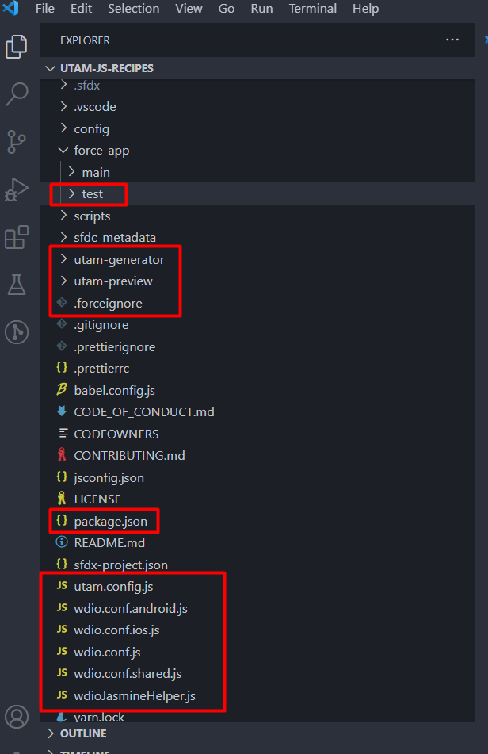
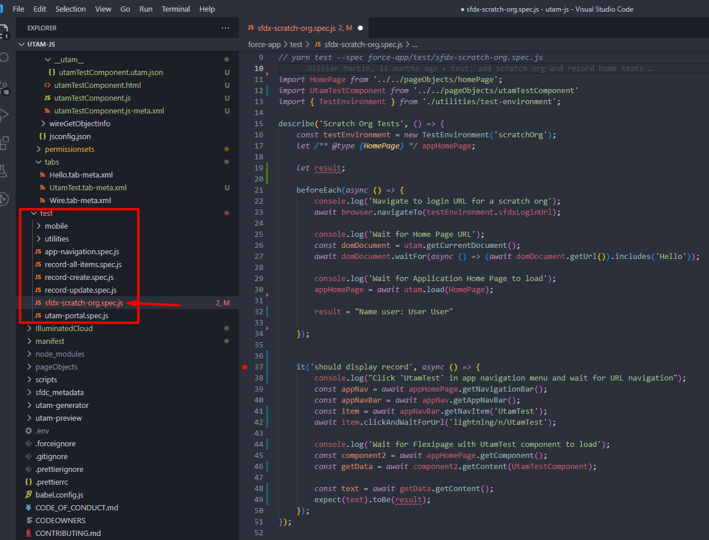

End-to-End Tests with the UI Test Automation Model (UTAM)
Created by
Vladimir Gedeiko

Today we will discuss about
- What is End-to-End Tests?
- What is UI Test Automation Model (UTAM)?
- How it is work with Salesforce?
What is End-to-End Tests?
What is End-to-End Tests?
End-to-End Tests
The essence of this testing is to see if the program for the final client works, as was originally calculated. E2E tests are often performed with an automated UI testing tool (Example WebdriverIO).
Unlike unit tests, which cover individual components in isolation, E2E tests closely mimic the interactions of business users. E2E tests use a real browser to interact with components and navigate across screens when executing test scenarios.
End-to-End tests is the final stage of testing, after which they do not conduct any tests.
The Software Testing Pyramid
The Software Testing Pyramid
The Software Testing Pyramid
The Software Testing Pyramid

Pros and Cons End-to-End Tests
Pros:
Each separate test covers the real scenario of using the application and gives much more understanding to other developers, including the future, how exactly and why all this works. Based on the results of the work, you get "real" code-coverage.
In general, the use of only E2E testing for the application makes us think about simplifying the structure of your system and improving documentation.
Cons:

For example, Google company in the development of its products follows the rule "70-20-10", the numbers of which show the percentage ratio From the total number of tests, that is:
- 10% occupy E2E tests.
- 20% occupy integration tests.
- 70% occupy unit tests.
- 70% occupy unit tests.
- 20% occupy integration tests.
- 10% occupy E2E tests.
What is UI Test Automation Model (UTAM)?
What is UI Test Automation Model (UTAM)?
UI Test Automation Model (UTAM)
You write UTAM page objects in JSON with powerful and easy-to-understand grammar. Page objects are reusable blocks that let you reference the DOM of the page under test with CSS selectors. You can compose page objects to create advanced patterns. The fact that page objects act as a shareable contract, and they are written in JSON, are major differentiators compared to other UI testing tools. This allows UTAM to work with a mostly language-agnostic approach.
When you are ready to run E2E tests, UTAM compiles your page objects into JavaScript, TypeScript, or Java depending on your project settings. xYour tests can then leverage the compiled page objects to interact with your page.
UI Test Automation Model (UTAM)
How it is work with Salesforce?
How is it work with Salesforce?
Requirements for start:
Requirements for start:
Requirements for start:
Clone the utam-js-recipes repository:
git clone git@github.com:salesforce/utam-js-recipes.git
cd utam-js-recipes
Project structure
LWC UTAM structure

JSON Page Object

Install dependencies
yarn install
Build the project
yarn build
Test Example
yarn create:env
We use a .env file to contain the URL and authentication credentials for test environments that we use.
yarn create:env
Prerequisites
Follow the steps in the Quick Start: Lightning Web Components Trailhead project. The steps include:
- Enable Dev Hub in your Trailhead Playground
- Install Salesforce CLI
Org Setup
sfdx auth:web:login -d -a myhuborg


Create a scratch org
sfdx force:org:create -s -f config/project-scratch-def.json -a utam-js-test
Push the app to your scratch org:
sfdx force:source:push
Assign the utam permission set to the default user:
sfdx force:user:permset:assign -n utam
Open the scratch org:
sfdx force:org:open

Run the local app in a scratch org test
These tests run under the assumption that the initial URL loaded contains an access token so no manual login is required. To generate such a URL, follow the Org Setup steps above and then run:
yarn generate:login
This command runs the sfdx command below and adds the generated URL to the .env file in the root of this project
sfdx force:org:open -p /lightning -r
Finally, run tests:
yarn test --spec force-app/test/sfdx-scratch-org.spec.js